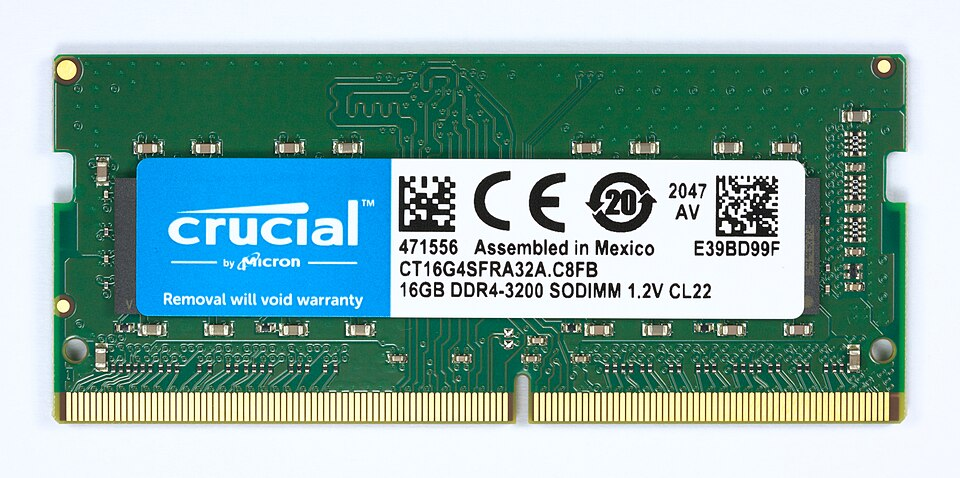

Test a used laptop RAM module and its slot
Use a known-good SO-DIMM and a bootable test to distinguish a bad module, socket, incompatible pair and memory-controller fault.
Read the label and find the reference
A RAM symptom can start at a removable module, its socket, the laptop’s power or memory controller, or soldered memory. A laptop that shows no picture may have a display fault. A laptop that starts an operating system and then crashes can have many other causes. Identify the last stage it reliably reached. Check the exact model’s memory generation, capacity limits, ECC support, supported module organisation and single-module slot population before any swap. DDR4, DDR5 and other generations use different electrical interfaces. A similar shape does not establish compatibility. T49 · Memory chips, the controller and failure modes · Kingston memory compatibility lookup.

Photo by D-Kuru, scaled with on-page callouts. Original photo · CC BY-SA 4.0.


Photo by Diego Torres Silvestre, scaled for the course. Original photo · CC BY 2.0.

Watch. Look for the failing address and differing bits. The video demonstrates optional Pro decoding on supported hardware. The swap matrix in this lesson works with a compatible free memory test. PassMark’s memory fault demonstration on YouTube.
Use a powered-down trainer and a compatible known-good module A, a suspect module B and the service guide. Disconnect the main battery as directed. Handle boards by the edges and use ESD control. Screen B for cracks, carbonisation, corrosion and damaged edge pads before installation. A visibly burned or suspected shorted module stays unpowered. Use the documented first slot with one module. If there is soldered memory or only one service slot, record that in the test matrix instead of inventing a second slot.
Boot the diagnostic separately from the customer's drive
On your trainer, set documented normal memory settings. Record the host model, firmware version, capacity, and the configuration in use. If the firmware retrains memory after a change, wait the time the manufacturer specifies before deciding it will not POST. A training delay differs from a repeatable error after boot.
Use a spare USB drive and the official image writer for your chosen tool. Writing the image erases that USB drive. Confirm the destination first. Use your laptop’s documented one-time boot menu. Keep production storage away from the exercise. If a diagnostic does not boot on a particular firmware or Secure Boot setup, choose the compatible manufacturer diagnostic or a compatible image. Preserve the host’s settings and any recovery requirements. PassMark MemTest86 for supported UEFI systems · Memtest86+ downloads and support notes.
First run A in the documented single-module position and complete a full test pass. Record tool, version, detected capacity, configuration, passes and errors. A full pass is a screening baseline. Repeat under the same configuration, including cold starts and a longer run appropriate to the job, before releasing used RAM. Record any reset or freeze, even when there is no printed error. A single reproducible error is enough to hold the part for further diagnosis.
Swap one thing at a time
Power down and isolate between swaps. Where the manual permits each slot to be used independently, test A in both slots and B in both slots. After each B test, recheck the reference if the fixture behaves differently. For an intermittent fault try a second known-good compatible host. Compare single-module and paired operation only in supported combinations.
| Repeated observation | What it suggests | Next check |
|---|---|---|
| A passes both slots. B errors in both. | B is the main suspect if its specification is supported. | Confirm B in a second compatible reference. Compare the part number and look for a board-level clue. Keep it out of service. |
| A and B pass slot 1. Both error in slot 2. | The problem follows the host slot or channel. | Confirm slot 2 alone is allowed. Inspect the socket. A socket, signal path, solder joint or controller can fail along the same path. |
| Both pass alone. The pair fails. | Population, module mix, memory training or signal margin could be involved. | Verify model-supported pairing and stock configuration. Compare with a known-good matched pair. |
| Several approved modules fail in a host with soldered RAM. | Results also exercise the permanent memory and shared paths. | Run the OEM test for the documented base-memory configuration, then assess the board or refer. |
For each swap, record host / slot / module / detected capacity / stock settings / passes / errors / restart behaviour. Preserve the failing condition and one independent comparison. Promote only supported parts that pass your repeatable release test. See PassMark’s guide to distinguishing memory faults and P92 for a cold inspection and repair decision.